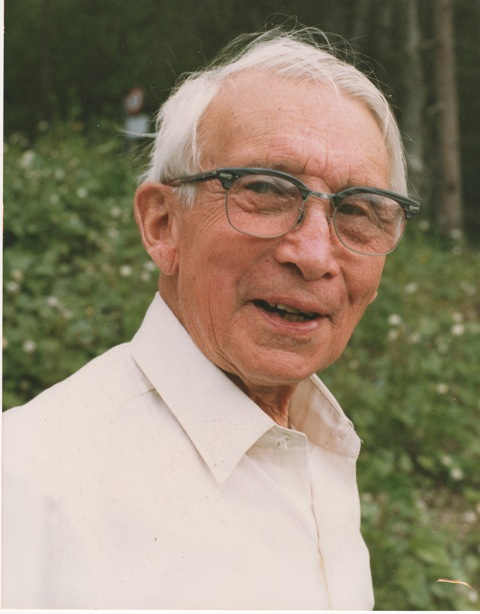

|

|
The Workshop is being organized since 1997. First its principal goal was to
serve as a seminar on physics of phase transitions and critical phenomena. The
seminar aimed in promoting and deepening studies of critical phenomena as well
as in exchanging information between scholars working in this field.
Gradually, the principal scope of the Workshop turned into a more general
context of complex systems, i.e. systems composed of many interacting parts
which display collective behavior that does not follow trivially from the
behaviors of the individual parts. The level of presentation and its
interdisciplinarity allows for participation of physics students and
academics working in different areas. Both review lectures as well as reports
on original work (in English or in Ukrainian) are welcome.
|